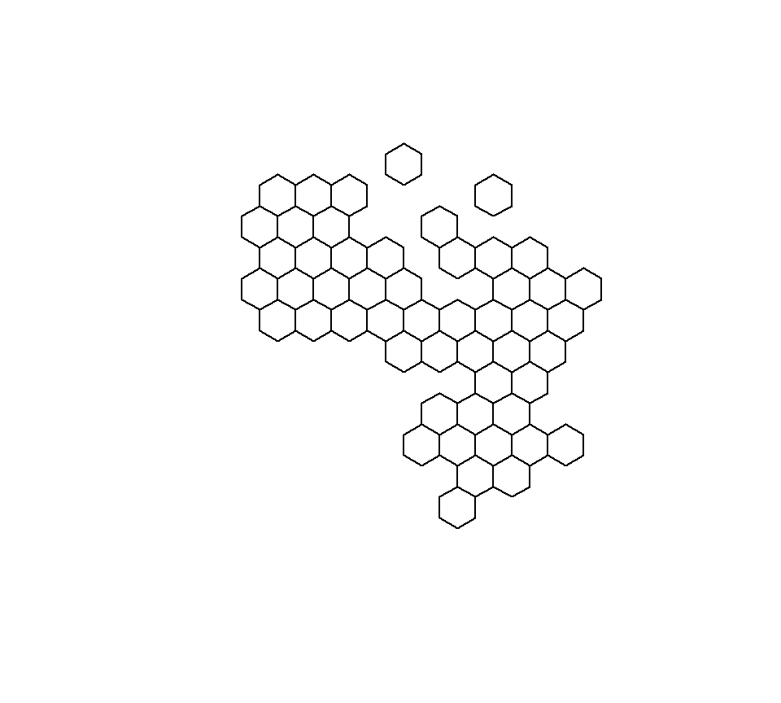
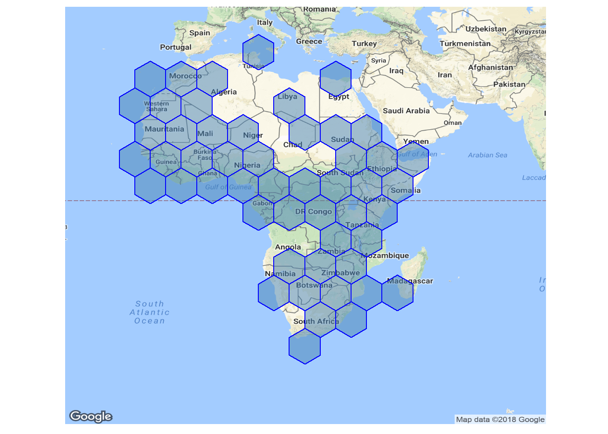

makeTilegram
makeTilegram
A tilegram is a tiled map where regions are adjusted to have the same size.
# Load required packages
require(makeTilegram)
require(rworldmap)
# Load simple map (without islands) from the `rworldmap` package
data("countriesCoarseLessIslands")
# Subset for Africa and remove NAs in the regions
afr <- countriesCoarseLessIslands[which(!is.na(countriesCoarseLessIslands@data$REGION) &
countriesCoarseLessIslands@data$REGION=="Africa"),]
tileGram <- makeTilegram(afr) # Make a Tilegram
plot(tileGram)
Comparison of tileGram to Actual Location
require(ggmap)
require(ggplot2)
tileGram <- spTransform(tileGram, "+init=epsg:4326")
# Convert to a data.frame
tileGram_f <- ggplot2::fortify(tileGram)
tileGram_f <- plyr::join(tileGram_f, tileGram@data[,c("id", "tile_region")],by="id") # Join with original data
m <- ggmap(get_map(location = "Congo", zoom=3))
m + geom_polygon(data=tileGram_f, aes(long, lat, group = group), fill="steelblue", colour="blue", alpha=0.5) +coord_equal() +
theme(panel.background = element_blank(),
axis.title = element_blank(), axis.text = element_blank(), axis.ticks = element_blank())
Interactive Plot using Plotly
The code chunk below shows how to build the plot using ggplot2 and add interactivity using plotly.
require(plotly)
## Join to population and GDP data
df <- afr@data[,c("GEOUNIT", "POP_EST", "GDP_MD_EST")]
names(df)[1] <- "tile_region"
df$`GDP Per Capita` <- round((df$GDP_MD_EST*1e6)/(df$POP_EST),-1)
tileGram_f <- plyr::join(tileGram_f, df)
names(tileGram_f)[names(tileGram_f)=="tile_region"] <- "Country"
names(tileGram_f)[names(tileGram_f)=="GDP Per Capita"] <- "GDP_Capita"
tileGram_f$value <- paste0("$",format(tileGram_f$GDP_Capita,big.mark = ","))
## Build plot in `ggplot2`
p <- ggplot(tileGram_f, aes(label = Country, text=paste("GDP per Capita:", value))) +
geom_polygon(aes(long, lat, group = group, fill=log(`GDP_Capita`))) +coord_equal() +
theme(panel.background = element_blank(),
axis.title = element_blank(), axis.text = element_blank(), axis.ticks = element_blank()) +
scale_fill_continuous(name = "GDP per head (USD)",labels=function(x) paste0("$",format(round(exp(x),-3),big.mark = ",",scientific = F)))
## Add interactivity with plotly
ggplotly(p,tooltip = c("Country", "text")) %>% config(displayModeBar=F)